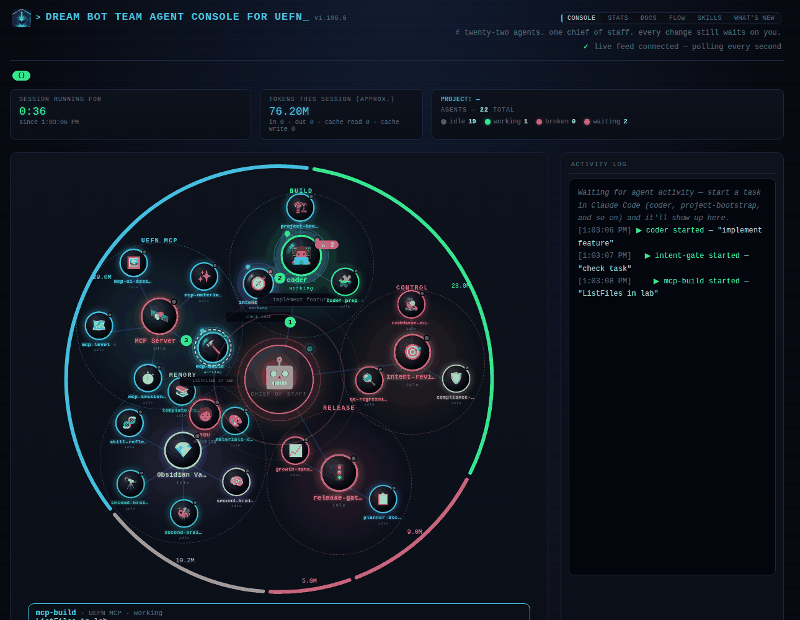
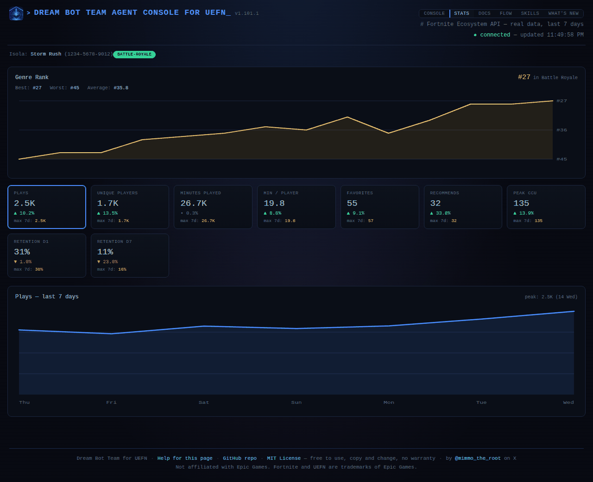
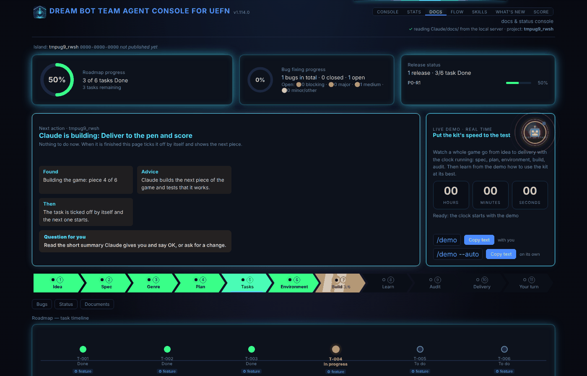
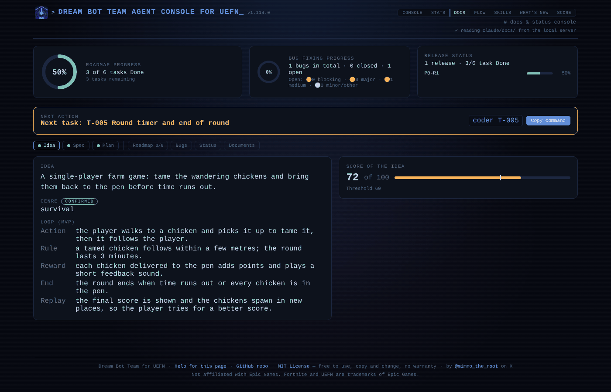
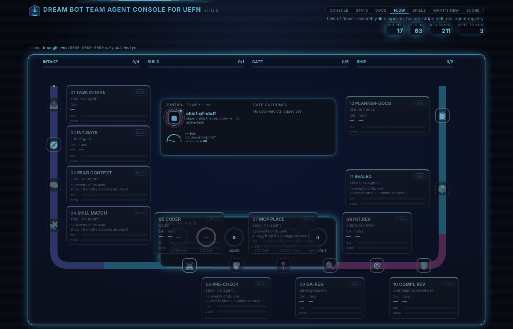
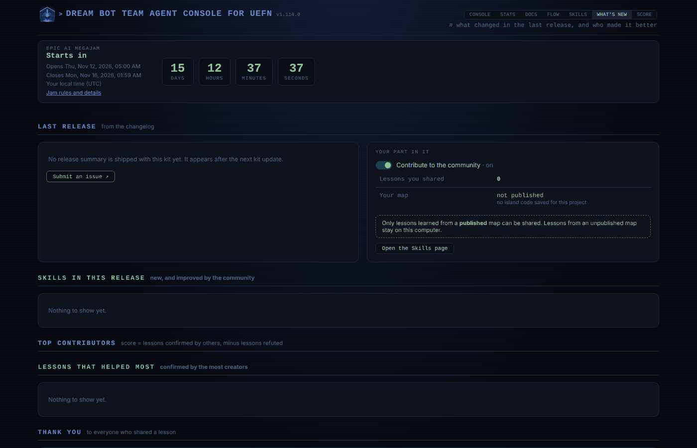
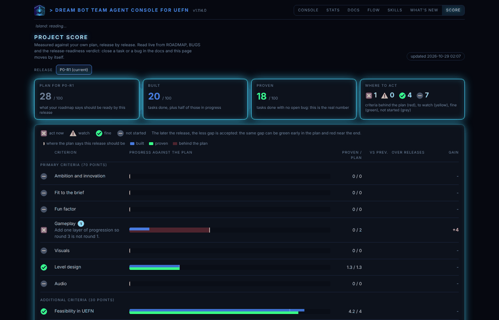

The console
A local web page that shows what your team is doing, what the kit has learned, and what changed.
The console runs on your own computer. It starts by itself when you open a session in a project, at http://127.0.0.1:8765/. Nothing in it is sent anywhere. Seven pages share one menu at the top.
Open it as that web address, not as a file from your disk, and reload the page after a kit update.
Console
The live view, drawn like a small solar system. The chief of staff, which is your main Claude session, is the sun. Five planets orbit it, one per group: BUILD (coder), CONTROL (intent-reviewer), RELEASE (release-gate), MEMORY (the Obsidian Vault) and UEFN MCP (the MCP server). The other agents are the moons of their planet: they turn around it in the opposite direction and more slowly. An agent lights up while it works, and a pulse travels from one to another on a hand-off. You are the small red card near the sun.
- Session running for and tokens this session in one compact row at the top, so the whole system stays visible without scrolling. The token count is an approximation, summed from the session transcript; its details (in, out, cache) sit beside the total.
- Summary line (1.114): one line under the menu says where the work stands (tasks done, what Claude is building, what is built and waits for your playtest, open bugs) and, when only you can move on, the amber sentence "Your turn: play one round and tell Claude what you saw". It is read from the project's roadmap and bug list, never typed.
- The kit's numbers (1.114): in the card next to the tokens, badges for AI agents, skills, genre lessons and proven recipes, with the state of the agents (idle, working, broken, waiting) under them. Below the cards a strip of badges shows the UEFN MCP tools mapped and the kit's public badges (licence, release, downloads, stars, UEFN, Verse, Claude Code, Fortnite maps). The numbers are read from the kit, not typed by hand: if the strip is missing, reload the page after restarting the console server.
- The five-stage rail follows the current task from intent-gate to planner-docs.
- The activity log on the right lists what each agent started and finished.
- A coloured arc around the whole system, one per group, as long as the tokens that group used (last 30 days). The numbers on the arcs are those tokens.
- A small light on each card: grey when idle, green while working, yellow while waiting for a helper, red when it has run suspiciously long.
Below the cards, Tokens per agent (last 30 days) opens a table with, for each agent, how many times it ran and how many tokens it used (input, output, cache read, cache write, total) and on which model. It is read from the transcripts Claude Code keeps for each helper, so it shows only what exists on this computer: if nothing is found, it says "not available" instead of zero. It counts tokens, not money, because prices change, and it leaves out your main session, which the box above already shows. The first opening can take a few seconds while older runs are read.
Under the map there is a row of six round switches. Each one shows or hides one thing, and the choice is remembered in this browser:
- Token: the coloured arcs around the system.
- Queue: a red
⏳ nlabel on a group when some of its agents are waiting for a helper. - Chain: numbers 1, 2, 3 on the lines of the agents that are working, in the order they started.
- Detail: click any card to see what it is doing, how often it ran this session and its tokens, in a card under the map.
- Pins: press Pin in that card and the agent stays in a row of small cards under the map.
- Needs you: a red line under the map when an agent is waiting for your approval.
The long explanation of every animation is folded under How to read this page.
Why it is there. To answer one question without reading a log: is my team working, on what, and is something stuck? The ring shows who is busy, the rail shows how far the task has come, and the red light warns about an agent that has been running for suspiciously long.

Stats
Real numbers from Epic's public data about your island: plays, unique players, minutes played, minutes per player, favorites, recommends, peak players and day-1 and day-7 retention, over the last 7 days. Click a tile to see its chart.
Epic usually shows numbers only after the map is published and has had visitors, so a new map shows one message instead of empty tiles. The page needs the island code saved in the project.
Why it is there. Epic's numbers tell you whether people come, stay and come back. Day-1 and day-7 retention are the ones to watch: they show whether the first minutes work and whether the map is worth returning to. The analytics coach works from the same numbers when it proposes changes.

Docs
The project's own documents, read from Claude/docs/: the game idea, spec and plan, the roadmap, bugs, status and release readiness. It is a read-only view of what the agents keep up to date. The full path of a game is in the chapter From an idea to a playable game.
What you see
- Three progress bars at the top: Roadmap progress, Bug fixing progress and Release status.
- Next action (1.114): the card has a fixed order: Found (where we are), Advice (what Claude does), Then, and last, in an amber box, the Question for you. It has a Copy text button: nothing runs by itself, you paste the text in Claude Code and every change still waits for your approval. A task that is built and only waits for your playtest is shown as "Your turn", never as "Claude is building". The project name shows next to it and in the connection line (for a UEFN project the name of the folder above
Content). - The workflow as arrows (1.114): Idea, Spec, Plan, Tasks, Environment, Build, Audit, Delivery. The arrow of the step in progress is lit and pulses; a finished step turns fully green; the ones not started are grey. When a step finishes, the page opens the next one by itself, so while Claude Code works you do not have to click: Build shows each task row light up as it changes, Environment each scenery row. After Delivery comes a ninth step, Your turn: everything that is left for you (tasks blocked on you, audit findings, what Claude cannot do). A task blocked on something only you can do turns the Build arrow red and the flow stops there until you act. Bugs, Status and Documents are the small tabs below. Every step shows its page even before there is any data (greyed, with the command that fills it), so you can see what is coming.
- Ideas (Idea step): one tab per idea, up to 5, each with its score, verdict, weak points and score history, and a Compare tab. With
/spec --improve Nyou rework an idea to raise its score;/spec --new-ideaadds another. If you have your own material (notes, a half-written spec) give it to/spec: it is the starting point; with nothing, Claude Code proposes three ideas and works with you. - A new map shows something else on purpose: the three top cards become the journey (0 of 8 steps), bugs 0 and the release not started, and the Status tab offers only two ways in: your own game (
/spec) or the demo (/demo,/demo --auto), each with a copy button. - The demo clock is a box always visible next to the next action: hours, minutes and seconds in tiles, at 00:00:00 until a demo starts. While it runs it shows the running phase; when it has finished it says "Last demo finished in ..." with the date, so an old run is never mistaken for a current one.
- The same header on every page: the island strip (with a note while the map is not published), then the detail of the page. The session, tokens and project cards stay on the Console page only, so the other pages keep their room for data. Under the strip a line shows the commands useful on that page, and the footer of every page links to All commands, the list of every command of the kit (
/commandschapter, written from the command files, so it is always the real one). - Pilot demo (Documents tab): the two buttons Copy /demo (interactive) and Copy /demo --auto (no questions) run the complete Chicken Roundup example into a test project; the Demo timer shows the total time on top and, smaller below, the running phase with its own time; it stops when everything is ready.
- Files parked for cleaning (What's new page): the kit never deletes your files; replaced or old ones wait in the
_to_deletefolder of the project. Open the folder to inspect shows it in the file manager; Delete everything or Delete this one (one parked folder at a time, with a second click to confirm) cleans it when you decide. Old projects are migrated automatically on/kit-update: the old demo copy folder is moved there. - Roadmap, open tasks by release: what is still to do, grouped by the release it belongs to.
- Open bugs, sorted by severity: the worst first, with status.
- Recent status: the priorities and the actions that wait for you, taken from
STATUS.md. - Documentation: one card per document (
GAME-SPEC,CONSTITUTION,PLAN,STATUS,ROADMAP,SPEC,BUGS,RETENTION-NOTES,RELEASE-READINESS; the first three carry a NEW badge). Click one to read it, rendered or as raw text. A document that does not exist yet says "not created yet" instead of failing to open. - Live, who is working now: the agents active at this moment.
The page follows the files: when an agent saves a document, the page redraws within about five seconds, so you can keep the tab open.
Why it is there. So you can see where the project stands without opening files, and check what the agents wrote. planner-docs is the only one that edits the roadmap and the status; you read, and approve what asks for your decision.


Flow
The pipeline as a U-shaped board: every station a task passes through, in order. Intake runs down the left side, build and gate along the bottom, ship up the right side.
What you see
- Twelve stations, each with a card: its number, its name, its state (done, working, waiting or idle), the agent that runs it, two figures and two bars. The agent's own icon sits on the track at its station, so you see who is where. The station that is working carries a tag with the task ID.
- The two figures are the agent's tokens and, while it works, how long it has been at it; when it is not working, its last verdict. The bars show the agent's share of all sub-agent tokens (tok) and the share of its verdicts that passed (pass).
- Four bars at the top, one per zone (intake, build, gate, ship), fill as stations are done.
- In the middle, the Control Tower (the chief of staff and the token gauge, the same count as the Console page) with the gate outcomes (pass, reject, halted and asked you), and under it the Pipeline pulse: six rings for gate pass rate, session tokens, times the team asked you, the model tier used most, agent runs and decisions.
- Below the board: the decision log, the model tiers, the cost of asking you, the agent list and the recent activity.
Some steps (task intake, read context, skill match, pre-check, MCP place, sealed) are not agents and write no events. They show "done" only when a later station is working, and they carry no numbers. A figure the kit cannot read is shown as a dash, never invented.
Why it is there. To see where a task is, what it costs and why it waits. If the tokens pile up at one station, that is where the cost is. A reject at a gate explains why a task goes back to the coder. The "asked you" ring counts how often the team had to stop and wait for you, which is the number to bring down.

Skills
What the kit has learned, and what waits for you. At the top, four cards (what waits for you, lessons, recipes, the projects the kit learns from), each with a ring, and a LEARN block with one button: Learn from this map or Learn from this product. Under them, the tabs:
- To approve: lessons from your work, lesson packs and recipes that came back from the community, and the lessons of a Fab product. One list, five per page, with Approve all. What you approve leaves the list.
- To share: everything that can leave your computer (lessons, recipes, the UEFN MCP proof) in one list, with its state (collected, ready, shared, private) and a Keep private button. On the maintainer's computer ready items go out with the next release; the Community tab has a View switch (Maintainer / Contributor) to see what a user sees.
- Lessons, Recipes, Skills: everything the kit knows, with filters and a search.
- Maps & products: every project the kit learns from, with a bar for how much is learned.
- This map (or This product in a Fab product): the genre and type, the steps of the learning, the blueprint and the recipes of the project you are in.
- UEFN MCP: how many of UEFN's tools have a recipe ("recipes cover 225 of 388 tools, 221 proven") and how many answered in tests, the safe tests, and the latest news. Four rings (proven by use, tool answered, not verified, failed), a bar per area and the growth over the last weeks. It fills by itself, see The MCP engine.
- Community: the switch to share, covered in Community.
In a Fab product the console also has a Checklist tab (see A Fab product project).
The SKILLS tab blinks when something waits for you. More in Skills and lessons.
Why it is there. The kit learns from your maps, and you decide what it keeps. This page is where you approve or reject a lesson, see how much of UEFN's toolset the kit really uses, and choose whether to share anything with the community.

What's new
The last release in plain words, the skills that improved, the top contributors, the thanks, and a link to submit an issue on GitHub. Right under the numbers a small card asks you to put a star on the repo and follow for updates on X. It also shows your own part: whether sharing is on, how many lessons you shared, and whether your map is published.
Why it is there. After an update, to know what changed and whether it concerns you, and to see the community's part in it.

Score
How far the project is against its own plan, release by release. A chart shows the plan, what is built and what is proven, with a forecast at the current pace. Under it, every criterion has a traffic light (red act now, yellow watch, green fine) and a number saying where to work first. The primary criteria are the quality criteria of the contest or genre (70 points); the additional ones are ours (feasibility, scope, retention, publishing readiness, documentation; 30 points); a bonus track is shown but not counted.
Nothing is typed by hand. The page reads ROADMAP, BUGS and the release-readiness verdict of the project, so closing a task or a bug in the docs moves the score by itself. Tasks the page cannot link to a criterion are listed, and the team classifies them. New criteria are proposed on the Skills page and need your approval.
Readiness (1.114): under the four tiles, one honest number out of 100. Only proven work counts (open bugs already lower it); a criterion fed by a single task counts half, because a small sample proves little; a task marked Done with no written proof after the word counts half, and the page names it. The Scope criterion compares the plan with the number of tasks when work started: while the plan is still being written it does not count as scope creep.
Why it is there. To see at a glance what is missing in an advanced project, and to compare one release with the previous one.

The header, on every page
Logo, title and version, the menu, then a row under the title: Aura (six small cubes that change the accent colour), Drift (the colour fades by itself from one to the next) and Motion (always show the movement, even when your system has animation effects off). Under the menu, the island strip: the project, the island code (0000-0000-0000 until the map is published, so the strip does not move) and the genre chip.
Update banner
How the pages look and move (1.114)
Every page is built from the same pieces, so you learn one page and know them all.
- Colour means status: green is done and proven, amber is your turn, red is blocked, cyan is running now, grey is not started. A dot shape or a word always goes with the colour.
- Motion shows life, and costs almost nothing: a ring around what is running, a slow breath on what waits, a light moving across the step in progress. Nothing moves when nothing runs. If your system asks for reduced motion, every animation stops.
- Numbers line up in tables and counters, and text lines stay short enough to read.
- The panels breathe, each at its own rhythm (3 to 6 seconds), the one card a page is about a little stronger. A thin light crosses the top of the page every few seconds, the "live" dots pulse, and a number that changes gives a small tick.
- Pixel wave: when the data inside a panel really changes, a short wave of small translucent cubes passes over it, fast or slow, in a random direction. At most one wave per panel every 8 seconds. To turn it off, run
localStorage.setItem("kit-pixel-wave","off")in the browser console of the page. - Aura: six small cubes under the title (Cyan, Blue, Violet, Magenta, Teal, Ice) change the accent colour of the glow, the pixel wave and the title. The status colours (green, amber, red) are never themed. The cubes pulse one after the other, each at its own speed. Your choice is kept in this browser.
- Aura Auto: the
Driftbutton next to the cubes lets the aura drift by itself, fading the gradient from one colour to the next (3 to 8 seconds), then resting for an irregular time (a second or two, or up to 15). Click a cube to take control again. - Bars and rings: a progress bar eases to its new width (and grows from zero the first time), a light runs along the full bars, the rings fill with a soft curve and the percentages count up.
- Motion: the button next to Drift. Off follows your system; on (lit) always shows the movement, even when Windows has "Animation effects" off.
- Hover: every box lifts a little when the mouse passes over it and starts its own animation: a wave of cubes, bars growing again from zero, rings filling again and percentages counting up. It works the same on every page, including Skills.
- Reduced motion: if Windows has "Animation effects" off, the page stops everything that moves (the light on top, the tick, the lift on hover); the breathing and the dots, which only change brightness, stay.
- The selected tab has an underline, not a coloured bar on its side.
- Keyboard: every button and field shows a clear outline when you reach it with the Tab key.
The rules and the reasons are in the console design and what each page is for in the console product notes. If you add or change a page, run python Claude/hooks/ui_lint.py: it must print ui_lint: ok.
When your computer holds a newer kit version than the project you are in, the console says so. Run /kit-update, open a new session, and reload the page.